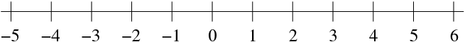
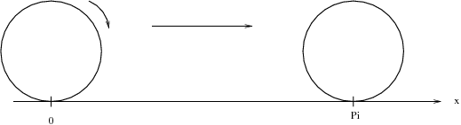

Onlinekurs Mathematik - Elementares Rechnen - Zahlen, Variablen, Terme
Einführung
Mathematik ist die Welt der Zahlen. Wenn man verschiedene Zahlen näher
betrachtet, so erkennt man jedoch grundlegende Unterschiede. Manche Zahlen
lassen sich nicht als geschlossener Dezimalbruch darstellen, andere sind schier
unvorstellbar (imaginär), wieder andere kann man an den Fingern abzählen oder
aber als Lösungen von Gleichungen gewinnen.
Info
1.1.1
Die in der Mathematik verwendeten Zahlenbereiche sind:
| | die Menge der natürlichen Zahlen ohne Null, |
| | die Menge der natürlichen Zahlen inklusive Null, |
| | die Menge der ganzen Zahlen, |
| | die Menge der rationalen Zahlen (Brüche), |
| | die Menge der reellen Zahlen. |
Diese Zahlenbereiche sind nicht unabhängig voneinander, sondern bilden eine Kette ineinandergeschachtelter Zahlenmengen:
Diese Zahlenbereiche erhalten wir, indem wir uns nacheinander die
Lösungen folgender Gleichungen anschauen und die Zahlenbereiche so erweitern, dass immer eine Lösung existiert:
| Zahlenbereich | lösbare Gleichung | nicht lösbar | Hinzunahme | neuer Bereich |
| | | | negativer Zahlen | |
| | | | von Brüchen | |
| | | | irrationaler Zahlen | |
| | | | usw. |
Natürliche Zahlen treten immer dann auf, wenn Anzahlen bestimmt oder Dinge nummeriert werden müssen.
Sie spielen in der Kombinatorik eine große Rolle: die Anzahl der Möglichkeiten, aus 49 Kugeln 6 Kugeln zu ziehen,
ist zum Beispiel eine natürliche Zahl. In der Informatik bilden sie die Grundlage für die verschiedenen Zahlensysteme:
das Dualsystem hat die Basis 2, das Dezimalsystem die Basis 10 und das Hexadezimalsystem die Basis 16.
Bestimmte natürliche Zahlen, die Primzahlen, bilden die Grundlage der modernen Verschlüsselungstechniken.
In der Menge der natürlichen Zahlen lässt es sich einfach rechnen, aber wir stoßen an Grenzen, wenn wir zum Beispiel eine Temperaturangabe von 3
C lesen (handelt es sich um Plus- oder Minusgrade?) oder eine Gleichung der Form
auflösen möchten. Daher müssen wir die Menge der natürlichen Zahlen um die negativen natürlichen Zahlen erweitern und erhalten
.
Die
Menge der ganzen Zahlen wird mit
bezeichnet.
Ganze Zahlen werden immer dann benötigt, wenn das Vorzeichen der natürlichen Zahlen eine Rolle spielt.
Außerdem können nun Zahlen subtrahiert werden, d.h. Gleichungssysteme der Form
sind lösbar (
.)

Auf den ganzen Zahlen lässt sich eindeutig ein Vergleichssymbol
definieren, die ganzen Zahlen lassen sich damit zu einer Kette anordnen:
Eine rationale Zahl stellt das Verhältnis zweier ganzer Zahlen dar:
Info
1.1.2
Die Menge der
rationalen Zahlen wird mit
bezeichnet. Die Elemente
der Menge
heißen
Brüche, wobei
der
Zähler des Bruchs und
der von Null
verschiedene
Nenner des Bruchs ist.
Rationale Zahlen spielen immer dann eine Rolle, wenn Angaben "genauer" werden sollen, also Temperaturen in Bruchteilen von
C angegeben, Anteile von Flächen eingefärbt oder Medikamente aus bestimmten Bestandteilen zusammengemischt werden sollen.
Dabei ist zu beachten, dass die Darstellung als Bruch nicht eindeutig ist, man kann die gleiche Zahl durch mehrere Brüche beschreiben.
Beispielsweise ist
die gleiche rationale Zahl.
Andererseits kann nicht jede Zahl auf dem Zahlenstrahl als Bruch dargestellt werden.
Wenn wir ein Quadrat mit der Seitenlänge 1 betrachten und die Diagonale
berechnen wollen, so erhalten wir nach dem Satz von Pythagoras:
|
|
| |
Eine weitere Zahl, die offensichtlich nicht als Bruch dargestellt werden kann, erhält man durch Abrollen eines Rades mit Durchmesser 1 auf der Zahlengeraden. Es handelt sich um die Zahl
.

Eine Zahl ist irrational, wenn sie nicht rational ist, also nicht als Bruch aufgeschrieben werden kann.
Die irrationalen Zahlen schließen nun die noch vorhandenen Lücken auf der Zahlengeraden, jedem Punkt entspricht genau eine reelle Zahl.
Info
1.1.3
Die Menge der
reellen Zahlen wird mit
bezeichnet und setzt sich aus der Menge der rationalen Zahlen und der Menge der irrationalen Zahlen zusammen.
Sie enthält alle auf der Zahlengeraden darstellbaren Zahlen.
Reelle Zahlen dienen als Maßzahlen für Längen, Flächeninhalte, Temperaturen, Massen, etc.
Im Kurs werden die mathematischen Probleme typischerweise mit reellen Zahlen gelöst.

 Kursinhalt
Kursinhalt Einführung
Einführung Mein Kurs
Mein Kurs Einstellungen
Einstellungen Eingangstest
Eingangstest Suche
Suche Das KIT
Das KIT Feedback
Feedback Beta-Version
Beta-Version